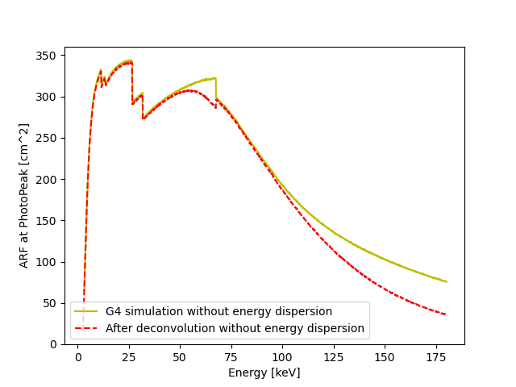

Calibration and performance of ECLAIRs.
Ground calibration, response files, detector-response homogeneity and preparation of tools supporting scientific analysis and real-time GRB monitoring.

I joined the SVOM team at IRAP to contribute to calibration and performance activities for the ECLAIRs instrument. I participated in the ground-calibration phase of the flight model of the ECLAIRs detection plane and its full camera, including the coded mask.
I contributed to science tools used for instrument calibration, in particular ECLAIRs response files required for scientific data analysis. I also developed tools based on the Kolmogorov–Smirnov test to assess the homogeneity of detector responses under different configurations, and contributed to preparation of Burst Advocate tools for real-time GRB monitoring.

